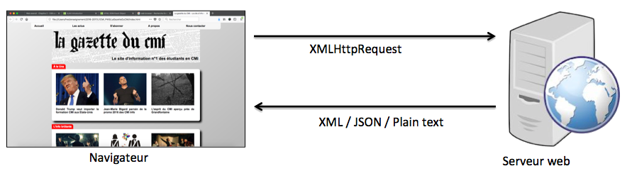
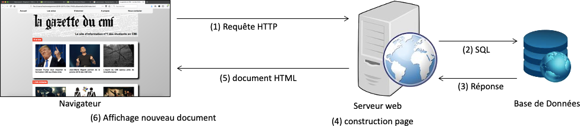
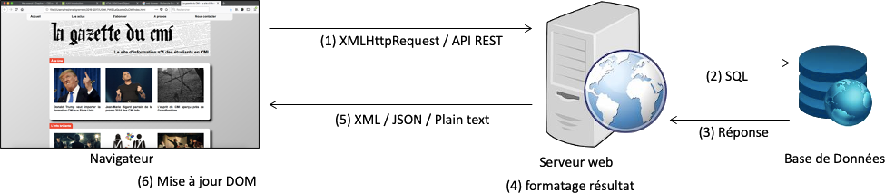

Après avoir vu le langage Javascript en lui-même, nous allons nous concentrer désormais sur les environnements d'exécution de ce langage, d'abord côté client, puis côté serveur.
Côté client, c'est dans un navigateur web que les scripts Javascript vont s'exécuter.
“The browser is a really hostile programming environment.” --Douglas Crockford
Mais on va quand même essayer de s'en sortir...
La façon la plus naturelle d'exécuter du code Javascript dans le navigateur est de placer celui-ci dans une balise <script>.
Cette balise peut être placée dans l'entête de la page (marqueur <head>) ou dans le corps du document
(marqueur <body>).
La balise script admet un attribut src qui permet également de désigner un fichier externe
à la page contenant le code Javascript, généralement enregistré avec une extension .js.
Il est également possible d'écrire des portions de code dans les événements associés aux marqueurs (généralement
préfixés par onXXX, comme par exemple onclick, onfocus, onload, etc.
(voir
En général ces portions de code seront relativement courtes, le plus souvent il s'agira d'un appel de
fonction déclarée dans une balise script pour ne pas surcharger le code HTML.
Les deux exemples précédents vous donnent un aperçu de ce qu'il est possible de faire avec Javascript :
répondre à des événements au sein du navigateur, modifier le contenu de la page affichée, utiliser une
fonction native fournie par l'environnement d'exécution (alert(...)), etc.
Ce chapitre a pour objectif de faire un tour d'horizon des possibilités de Javascript côté client (navigateur).
Bien évidemment, nous ne pourrons pas être 100% exhaustifs. Ce sera à vous d'être un peu curieux, et de faire de la veille technologique sur les dernières évolutions du langage (une fois par an) et des navigateurs API proposées (fréquence plus variable/aléatoire).
Ceci étant dit, amusons-nous un peu !
“The W3C Document Object Model (DOM) is a platform and language-neutral interface that allows programs and scripts to dynamically access and update the content, structure, and style of a document.”
Javascript peut manipuler le DOM d'une page, et en faire ce qu'il veut :
- changer les éléments HTML d'une page
- changer les attributs des éléments HTML d'une page
- changer le style CSS d'une page
- supprimer des élements HTML et des attributs
- ajouter de nouveaux éléments HTML et attributs
- réagir aux événements HTML générés par une page
- créer de nouveaux événements dans une page
documentPour réaliser toutes ces actions, Javascript va s'appuyer sur un ensemble de méthodes portées par les différentes entités HTML.
Chaque entité HTML va ainsi être un objet qui propose des propriétés (influençant son rendu ou son comportement) et des méthodes (permettant l'évolution de ces propriétés ou l'accès à d'autres éléments).
L'objet document représente la page web. C'est lui qui possède, et permet d'accéder à,
tous les éléments de la page.
Cet objet contient des méthodes pour :
- récupérer des éléments : par identifiant (
getElementById(id)), par nom de marqueur (getElementsByTagName(name)), ou par classe (getElementsByClassName(class)) - créer des éléments et gérer le DOM :
createElement(name),appendChild(element), etc. - écrire du code dans le flux HTML du document avec
write(text)
Quelques propriétés intéressantes, qu'il faut voir comme des raccourcis pour accéder aux objets de la page.
| Propriété | Description |
document.body | L'élément <body> de la page. |
document.cookie | Le cookie de la page (détaillé plus tard). |
document.doctype | Le doctype du document. |
document.documentElement | L'élément <html> de la page. |
document.forms | La collection des éléments <form> de la page. |
document.head | L'élément <head> de la page. |
document.images | La collection des éléments <img> de la page. |
document.links | La collection des liens <a> ou <area> de la page. |
document.referrer | L'URI de la page d'origine (ayant mené sur la page actuelle). |
document.scripts | La collection des éléments <script> de la page. |
document.title | L'élément <title> de la page. |
document.URL | L'URL complète du document. |
Javascript permet, à partir de l'objet document de récupérer les éléments
| Méthode | Description |
document.getElementById(id) | Renvoie l'élément du document qui a pour identifiant id, ou null si aucun n'existe.
Pour rappel, les identifiants doivent être uniques au sein d'un page. |
document.getElementsByTagName(name) | Renvoie une collection d'éléments ayant pour nom
de marqueurname. |
document.getElementsByClassName(class) | Renvoie une collection d'éléments ayant pour classe
class parmi les classes déclarées. |
document.querySelector(selecteur) | Renvoie le premier élément du document qui correspond
au sélecteur en paramètre ou null si aucun. |
document.querySelectorAll(selecteur) | Renvoie une collection d'éléments du document qui correspondent au sélecteur en paramètre. |
document.linksdocument.scripts... | Renvoie un objet ou une collection d'objets correspondant à collection demandée (voir diapo précédente). |
Pour une description complète des propriétés et méthodes de l'objet document :
D'après le standard W3C HTML DOM, tout ce qui est dans un document HTML est un noeud : le document en lui-même, les éléments HTML sont des noeuds, le texte à l'intérieur d'un élément HTML est un noeud texte, les commentaires sont des noeuds de commentaires.
Javascript permet de naviguer d'un noeud à l'autre, et bien sûr de créer de nouveaux noeuds, de modifier, de supprimer ou de remplacer des noeuds existants.
Pour accéder aux noeuds de l'arbre DOM, on peut utiliser les propriétés suivantes (en lecture seule) à partir d'un noeud n:
| Propriété | Description |
n.parentNode | Noeud père (ancêtre direct) |
n.childNodes[i] | Enfant (descendant direct) à l'indice i entre 0 et
n.childNodes.length-1 |
n.firstChild | Premier enfant (équivalent à n.childNodes[0]) |
n.lastChild | Dernier enfant (équivalent à n.childNodes[n.childNodes.length-1]) |
n.nextSibling | Noeud frère suivant (pas d'équivalent simple) |
n.previousSibling | Noeud frère précédent (pas d'équivalent simple) |
Dans le DOM, les éléments sont des noeuds particuliers. Les noeuds peuvent également être du texte ou des commentaires. Pour ne raisonner que sur des éléments, les objets éléments proposent les propriétés suivantes :
| Propriété | Description |
n.parentElement | Elément père ou null si le père n'est pas un élément |
n.children[i] | Elément enfant (descendant direct) à l'indice i entre 0 et
n.childElementCount-1 |
n.firstElementChild | Premier enfant élément (équivalent à n.children[0]) |
n.lastElementChild | Dernier enfant élément (équivalent à n.children[n.childElementCount.length-1]) |
n.nextElementSibling | Elément frère suivant (pas d'équivalent simple) |
n.previousElementSibling | Elément frère précédent (pas d'équivalent simple) |
Ces propriétés sont également en lecture seule (read-only).
| Propriété | Description |
n.nodeName | Renvoie le nom du noeud (équivalent au tagName pour les éléments) - read-only |
n.nodeType | Renvoie un entier donnant le type du noeud (par ex. 1 pour un élément, 3 pour un noeud texte, 8 pour un commentaire) - read-only |
| Propriété/méthode | Description |
e.tagName | Renvoie le NOM DU TAG (en majuscules) |
e.querySelector(selecteur) | Renvoie le descendant de e qui satisfait le sélecteur selecteur. |
e.querySelectorAll(selecteur) | Renvoie la liste des descendants de e qui satisfont tous le sélecteur. |
e.getElementsByTagName(name) | Renvoie la liste des descendants de e qui ont pour tag name. |
e.getElementsByClassName(class) | Renvoie la liste des descendants de e qui ont pour classe name. |
| Propriété | Description |
n.nodeValue | Définit/renvoie la valeur du noeud (null si le noeud est un élément). |
n.innerHTML | Définit/renvoie le code HTML du contenu du noeud. |
n.textContent | Définit/renvoie le contenu texte du noeud et de tous ses descendants. |
| Propriété/méthode | Description |
e.hasAttributes() | Renvoie true si l'élément e a des attributs. |
e.attributes | Renvoie la collection d'objets {name,value} des attributs d'un élément. |
e.getAttribute(name) | Renvoie la valeur de l'attribut name pour l'élément e. |
e.setAttribute(name,value) | Définit la valeur de l'attribut name
pour l'élément e. |
e.removeAttribute(name) | Supprime l'attribut name de l'élément e. |
| Propriété/méthode | Description |
e.id | Définit/renvoie l'identifiant de l'élément |
e.title | Définit/renvoie le titre associé à l'élément (attribut title) |
e.className | Définit/renvoie les classes associées à l'élément |
e.classList | Renvoie une liste des classes associées à l'élément. Applicable sur cette liste : length propriété pour connaître la taille de la liste add(name1, name2, ...) pour ajouter des classes,remove(name1, name2, ...) pour supprimer des classes,item(i) pour renvoyer le nom de la classe à l'indice i includes(name) pour tester si une classe est dans la liste,toggle(name) pour ajouter/supprimer la classe si elle est absente/présente dans la liste. |
e.style | renvoie une map du style de l'élément (détaillé plus tard) |
e.dataset.XXXe.dataset['XXX'] | renvoie la valeur de l'attribut personnalisé data-XXX |
| Propriété/méthode | Description |
document.createElement(tagName) | Créé un nouvel élément |
document.createTextNode(contenu) | Créé un nouveau noeud texte |
document.createComment(contenu) | Créé un nouveau noeud de commentaires |
| Propriété/méthode | Description |
n.insertBefore(new,c) | ajoute le noeud new juste avant le noeud c
dans la liste d'enfants de n |
n.appendChild(c) | ajoute le noeud c à la fin de la liste d'enfants de n |
n.removeChild(c) | supprime le noeud c des enfants de n |
n.replaceChild(new,old) | remplace le noeud old par le noeud new
dans les enfants de n |
Différents types de structures enregistrant un ensemble de noeuds peuvent être rencontrées :
- des objets HTMLCollection (pour les collections
document.forms,document.imagesou viagetElementsByTagName(...), etc.) qui sont assimilés à des tableaux mais qui n'en sont pas, on ne peut donc pas utiliser les fonctions des tableaux (comme par exemplepop()). - des objets NodeList (pour certains résultats de recherches d'éléments avec
querySelectorAll(...), ou via des propriétés commechildNodes) qui sont des objets représentant une liste avec des méthodes spécifiques.
Petit récapitulatif des notations et/ou méthodes utiles pour accéder aux éléments de ces deux types de structure :
| Notation (HTMLCollection) | Propriété/méthode (HTMLCollection) | Description |
coll.length | list.length | Renvoie la taille de la liste. |
coll[i] | list.item(i) | Accès l'élément i de la liste. |
| Propriété/méthode | Description |
e.clientHeight/e.clientWidth | Renvoie la taille visible (hauteur/largeur en pixels) de l'élément, incluant les marges internes mais pas la bordure - read-only |
e.clientLeft/e.clientTop | Renvoie la taille (en pixels) de la bordure gauche/dessus de l'élément |
e.offsetHeight/e.offsetWidth | Renvoie la taille (hauteur/largeur en pixels) de l'élément, incluant les marges internes, les bordures et la barres de défilement (mais pas les marges externes) |
e.offsetLeft/e.offsetTop | Renvoie la position (gauche/dessus) de l'élément, incluant la marge externe et la position par rapport à l'offetParent. |
e.offsetParent | Renvoie l'élément qui est le plus proche ancêtre en positionnement statique. |
e.scrollHeight/e.scrollWidth | Renvoie la taille totale (hauteur/largeur en pixels) de l'élément, incluant les marges internes, les bordures et la barres de défilement (mais pas les marges externes) |
e.scrollLeft/e.scrollTop | Renvoie le nombre de pixels de scroll interne d'un élément (horizontal/vertical). |
e.scrollIntoView() | Scrolle la fenêtre pour visualiser l'élément. |
La liste complète des propriétés des éléments du DOM est présentée ici :
Comme vu précédemment, la propriété style permet d'avoir accès et de modifier le style CSS qui
s'applique sur un élément.
Cette propriété ne donne pas accès au style calculé par la feuille de style ; elle donne un accès à l'attribut
style de l'élément HTML concerné.
Contrairement à d'autres propriétés des éléments HTML, celle-ci est un objet indexé sur les propriétés de style (éventuellement renommées pour éviter les traits d'union).
| Propriété | Description |
display | Format d'affichage (block/inline/none) |
top / left / bottom / right | Placement haut / gauche / bas / droite (positionnement relatif, absolu ou fixe) |
fontSize | Taille de la police |
background | Raccourci pour les propriétés CSS de fond de l'élément |
backgroundColor / backgroundImage | Composantes couleur/image du fond de l'élément |
color | Couleur de la police |
opacity | Opacité de l'élément |
textAlign | Alignement du texte dans l'élément |
visibility | Visibilité de l'élément (hidden/visible) |
Les valeurs de ces propriétés sont des chaînes de caractères qui correspondent au style CSS que l'on souhaite appliquer.
Globalement, toutes les propriétés de styles sont modifiables par Javascript. L'ensemble des propriétés de
style existantes est résumé ici :
Toutes les entités HTML héritent de HTMLElement, mais les objets du DOM sont bien plus vastes, présentant chacun des attributs correspondant à leurs attributs propres.
Par exemple, une image (objet Image) possède des attributs src,
width, height etc. directement accessibles et modifiables par
Javascript.
Il est possible d'utiliser Javascript pour valider les formulaires, ou récupérer des
valeurs des zones de formulaires lorsque l'on réalise des interfaces graphiques.
Les zones de formulaires possèdent ainsi des propriétés pratiques pour accéder à leurs
valeurs.
| Propriété | Description |
value | Valeur de la zone de formulaire (celle qui sera envoyée quand le formulaire sera soumis). Applicable à tous les objets représentant une zone de saisie. |
checked | Booléen indiquant si la case à cocher/bouton radio est sélectionné |
selectedIndex | Indice de l'option sélectionnée dans la liste déroulante (select) |
add()/remove() | Ajoute/supprime une option dans la liste déroulante (select) |
Il est possible d'utiliser Javascript pour valider les formulaires, ou récupérer des valeurs des zones de formulaires lorsque l'on réalise des interfaces graphiques.
Les zones de formulaires possèdent ainsi des propriétés pratiques pour accéder à leurs valeurs.
Il s'agit d'un ensemble d'objets, de propriétés et de méthodes proposées par les navigateurs.
Bien que non-standardisées, contrairement au DOM, tous les navigateurs sont alignés sur la définition de bon nombre de ceux-ci, qui sont regroupés sous l'appellation Browser Object Model.
Les objets concernés sont les suivants :
| Objet | Description |
window | la fenêtre de navigateur, dont il est possible de connaitre les dimensions, d'ouvrir une nouvelle fenêtre, etc. |
window.screen | objet fournissant des informations sur l'écran comme sa taille, les couleurs, etc. |
window.location | objet fournissant des informations sur l'url de la page (protocole, nom d'hôte, chemin d'accès, etc.). |
window.history | objet représentant l'historique de navigation de la page (permet d'aller en avant, en arrière, etc.) |
window.navigator | objet fournissant des informations sur le navigateur (OS, user-agent, etc.) |
document.cookie | le cookie de navigation associé au site |
Il s'agit d'un ensemble d'objets, de propriétés et de méthodes proposées par les navigateurs.
Bien que non-standardisées, contrairement au DOM, tous les navigateurs sont alignés sur la définition de bon nombre de ceux-ci, qui sont regroupés sous l'appellation Browser Object Model.
Les méthodes proposées par l'objet window sont les suivantes :
| Méthode | Description |
window.alert(...) | fenêtre popup permettant d'informer/alerter (bouton OK). |
window.confirm(...) | fenêtres popup permettant de confirmer (boutons Oui/Non). |
window.prompt(...) | fenêtres popup permettant de saisir (format texte). |
window.setTimeout(...) | fonctions de temporisation avec délai |
window.setInterval(...) | fonctions de temporisation récurrentes) |
Outre les propriétés qui seront détaillées dans le reste de cette section, l'objet window
présente, entre autres, les propriétés suivantes :
| Propriété | Description |
document | L'objet Document contenu dans la page |
frameElement | L'iframe dans laquelle le document est inséré (null si aucun) |
frames | L'ensemble des iframe contenues dans la page |
innerHeight/innerWidth | Hauteur/largeur internes de la fenêtre (sans les barres d'outils et de scolling) |
length | Nombre d'iframe contenues dans la fenêtre |
name | Le nom de la fenêtre actuelle |
outerheight/outerWidth | Hauteur/largeur externes de la fenêtre (incluant les barres d'outils et de scrolling) |
opener | Référence vers la fenêtre ayant ouvert la fenêtre courante (null si aucune) |
pageXOffset/pageYOffset | Nombre de pixels scrollés horizontalement/verticalement pour le document courant |
parent / self / top | Référence aux fenêtres parente/courante/conteneur |
L'ensemble des propriétés est disponible à l'adresse :
Tous les navigateurs n'implantent pas de façon équivalente certaines propriétés.
A titre d'exemple, sur Internet Explorer, la propriété window.innerHeight
est à remplacer par document.documentElement.clientHeight ou
document.body.clientHeight.
Le code ci-dessous permet de déterminer la taille de l'écran, quelque soit le navigateur utilisé :
Il n'est pas rare d'utiliser de telles disjonctions pour pallier aux problèmes d'existence de fonctions ou de propriétés. La sémantique est la suivante : si la première valeur existe, c'est elle qui est considérée, sinon c'est la suivante, sinon c'est celle d'après, etc.
L'objet window.screen fournit des informations sur l'écran sur lequel la page
est affichée. Il propose les propriétés suivantes :
| Propriété | Description |
availHeight/availWidth | Hauteur/largeur de l'écran (sans la barre des tâches) |
colorDepth | profondeur de couleur (en bits/pixels - 1, 4, 8, 15, 16, 24, 32, 48) |
pixelDepth | profondeur de pixel (équivalent au précédent) |
height/width | Hauteur/largeur totale de l'écran |
L'objet window.location permet d'analyser l'URL du document courant.
Il propose les propriétés suivantes :
| Propriété | Description |
href | L'URL complète du document |
protocol | Le protocole de l'URL |
host | Le nom d'hôte et le numéro de port |
hostname | Le nom d'hôte |
port | Le numéro de port |
origin | Le protocole, le nom d'hôte et le numéro de port |
pathname | Le chemin d'accès dans l'URL |
search | La partie requète (après le ?) |
hash | L'ancre ciblée (après le #) |
Ces propriétés sont en lecture et écriture (excepté origin qui est en lecture seule).
L'objet window.location propose les méthodes suivantes :
| Méthodes | Description |
assign(newURL) | Charge le nouveau document à l'adresse newURL. |
reload() | Recharge le document courant | .
replace(newURL) | Remplace le document actuel par newURL. |
assign est différente de replace car cette dernière supprime la page précédente de l'historique
(elle l'écrase), tandis que assign la page courante restera dans l'historique.
L'objet window.history permet de gérer la navigation dans l'historique et propose
la propriété suivante :
| Propriété | Description |
length | La taille de l'historique. |
L'objet window.history propose les méthodes suivantes :
| Méthodes | Description |
back() | Revient à la page précédente le l'historique. |
forward() | Va à la page suivante dans l'historique. |
go(url|n) | Se déplace de n pages dans l'historique ou vers la page ayant l'url. |
L'objet window.navigator propose les propriétés suivantes :
| Propriété | Description |
appCodeName | Retourne le nom de code du navigateur |
appName | Retourne le nom du navigateur |
appVersion | Retourne le numéro de version du navigateur |
cookieEnabled | Détermine si les cookies sont activés dans le navigateur |
geolocation | Renvoie un objet Geolocation qui permet d'accéder à la postition de l'utilisateur (détaillé plus tard) |
language | Retourne le langage du navigateur. |
onLine | Détermine si le navigateur est en ligne (connecté à internet) |
platform | Retourne la plateforme pour laquelle le navigateur est compilé. |
product | Retourne le nom du moteur du navigateur. |
userAgent | Retourne l'entête user agent envoyé par le navigateur au serveur. |
Il existe 3 types de fênetres modales :
| Méthode | Description |
window.alert(...) | fenêtre popup permettant d'informer/alerter (bouton OK). |
window.confirm(...) | fenêtres popup permettant de confirmer (boutons Oui/Non). |
window.prompt(...) | fenêtres popup permettant de saisir (format texte). |
Deux méthodes permettent de mettre en oeuvre des temporisations qu'il est possible d'annuler.
| Méthode | Description |
window.setTimeout(fonction, delai) | fonctions de temporisation avec délai |
window.setInterval(fonction, delai) | fonctions de temporisation récurrentes |
window.clearTimeout(id) | annule la temporisation avec délai |
window.clearInterval(id) | annule la temporisation récurrente |
Quelle célèbre phrase est illustrée ci-dessous ?

Il est parfois utile de pouvoir enregistrer des informations côté client.
Historiquement, c'est le mécanisme de cookie qui avait été proposé. Un cookie est une chaine de caractères possédant une durée de vie.
La propriété document.cookie permet de définir un cookie. La valeur
doit avoir un format particulier.
| Instruction | Signification |
document.cookie = "qui=fred"; |
Enregistre le couple de valeurs. Le cookie sera détruit lorsque le navigateur sera fermé. |
document.cookie = "qui=fred; expires=Sun, 31 Dec 2017 23:58:00 UTC"; |
Ajoute à l'instruction précédente que le cookie sera détruit à la date indiquée. |
document.cookie = "qui=fred; expires=Sun, 31 Dec 2017 23:58:00 UTC; path=/"; |
Ajoute à l'instruction précédente la page à laquelle le cookie est associé. |
En cas d'affectations multiples, les anciens cookies ne sont pas supprimés ; le nouveau est ajouté aux cookies existants. Il faut donc être prudent.
| Instruction | Signification |
var cook = document.cookie; |
Permet de lire le cookie dans la variable cook sous la forme d'une chaîne de caracères. |
document.cookie = "qui=; expires=Thu, 1 Jan 1970 00:00:00 UTC; path=/" |
Supprime le cookie en lui passant une date d'expiration antérieure à la date du jour. |
Attention, sous Chrome, en local, les cookies ne sont pas disponibles.
Le navigateur n'a pas accès au système de fichier côté client. Avant HTML5, seuls les cookies étaient possibles pour conserver de l'information. Or ceux-ci ne sont pas toujours efficaces notamment en terme de gestion des informations enregistrées.
HTML5 apporte des améliorations majeures en ce sens en proposant deux objets très pratiques :
sessionStorage: un objet permettant un stockage avec une durée de vie d'une session (la session se termine quand la fenêtre/l'onglet courant est fermé).localStorage: un objet permettant un stockage avec une durée de vie illimitée.
Ces deux types de stockage possèdent une taille maximale (5 Mo en général) et présentent une API similaire.
Le format des données à enregistrer sera le classique cle=valeur où la valeur est une chaîne
de caractères.
Si cela peut sembler limité à première vue, souvenez-vous que le format JSON pourrait être utilisé ici.
L'API des objets localStorage et sessionStorage propose la propriété suivante :
| Propriété | Description |
length | Renvoie le nombre d'items présents dans le stockage. |
La manipulation des items des localStorage et sessionStorage est réalisée au travers
des méthodes suivantes :
| Méthodes | Description |
key(n) | Renvoie la clé à l'indice n du stockage. |
getItem(cle) | Renvoie la valeur associée à la clé passée en paramètre |
setItem(cle,valeur) | Ajoute l'item avec le couple clé-valeur donné en paramètre. |
removeItem(cle) | Supprimer l'item de la clé donnée en paramètre. |
clear() | Supprime tous les items. |
Certains navigateurs proposent des méthodes standardisées, bien utiles, mais qui ne sont pas forcément disponibles dans tous les navigateurs. Pour pallier ce problème, on définit des polyfills (également appelées en français "prothèses d'émulation") qui sont des fonctions visant à fournir un service standardisé quelque soit le navigateur.
La fonction requestAnimationFrame(function) permet de réaliser un pré-calcul
de l'exécution de la fonction en paramètre (utile pour pré-calculer des animations, comme
dans le double-buffering).
Cette fonction n'existe pas forcément dans tous les navigateurs, ou pas avec ce nom (souvent avec un préfixe-vendeur). Pour pallier ce problème, on développe le polyfill suivant.
var requestAnimationFrame = window.requestAnimationFrame
|| window.webkitRequestAnimationFrame
|| window.mozRequestAnimationFrame
|| window.msRequestAnimationFrame
|| function(callback) { return setTimeout(callback, 1000 / 60); };
Par définition, un événement est "quelque chose" qui se produit au sein du navigateur, et qui va être observé et remonté pour pouvoir réagir.
Les événements peuvent avoir diverses origines :
- des stimuli utilisateur : clic de souris, survol d'un élément, appui sur une touche du clavier, scroll de la page, mise du focus sur un zone de saisie, etc.
- des événements internes au navigateur : chargement de la page, d'une image, d'un script, modification du DOM, etc.
- des événements internes au code Javascript : réception d'un message, retour d'appel d'une fonction asynchrone, etc.
- des événements personnalisés, définis par l'utilisateur
A part dans ce dernier cas, les événements sont déclenchés automatiquement par le navigateur, de façon complètement transparente pour l'utilisateur.
Il existe différents types d'événements :
- des événements souris :
click,dblclick,contextmenu,mousedown,mousenter,mousemove,mouseout,mouseover, etc. - des événements clavier :
keydown,keypress,keyup - des événements sur les objets/fenêtres:
load,scroll,error,unload, etc. - des événements sur les formulaires :
change,focus,submit,reset, etc. - des événements de glisser-déposer :
drag,dragstart,dragend,drop, etc. - des événements média :
loadeddata,play,error, etc. - des événements génériques :
message,online,storage, etc. - des événements tactile :
touchstart,touchend,touchmove, etc.
Chaque type d'événement est décrit par un objet spécifique, qui possède des propriétés globales et des propriétés propres au type d'événement considéré.
La référence complète des événements existants :
Javascript permet de réagir aux différents événements qui peuvent avoir lieu, en associant du code à
un événement par l'intermédiaire d'un écouteur d'événement (objet EventListener).
Ces derniers peuvent être directement déclarés dans les éléments HTML (par exemple avec l'attribut onclick)
ou être attachés aux entités HTML dans le code Javascript.
La seconde solution pour programmer la réaction à un événement est d'associer un écouteur d'événement à un objet ou une entité HTML.
Ceci se fait par l'intermédiaire de la méthode addEventListener(type, fonction, capture),
portée par les entités HTML, dans laquelle :
typeest une chaîne de caractère désignant le type d'événement considéré (par exempleclick)fonctionest la fonction (nommée ou anonyme) décrivant le code qui sera exécuté en réaction à l'événement. Cette fonction admet un paramètre représentant l'événement auquel on répond.captureest un booléen optionnel indiquant si l'événement est reconnu dans la phase de capturing (true) ou dans la phase de bubbling (false).
A noter qu'il est possible d'associer plusieurs écouteurs d'événements sur une même entité HTML (et pas forcément pour des événements différents).
Si vous souhaitez associer des écouteurs d'événements aux objets du DOM, il n'est possible de le faire
que lorsque celui-ci a fini de se charger (ce qui n'est pas le cas au sein de la balise script
de l'entête).
Pour pallier ce problème, on peut déclarer ces écouteurs d'événements lorsque le DOM a fini de se charger,
ce qui est signalé par... un événement (en l'occurrence DOMContentLoaded).
Le W3C définit 3 phases de propagation d'un événement, qui s'appuie sur le DOM :
- la phase dite "capturing" durant laquelle l'événement démarre de l'élément le plus englobant (en général la fenêtre) et se propage en descendant dans l'arbre DOM jusqu'à l'élément ciblé.
- la phase dite "targeting" durant laquelle l'événement a atteint l'élément cible.
- la phase dite "bubbling" durant laquelle l'événement remonte dans le DOM jusqu'à l'élément le plus englobant.
- la phase dite "capturing" durant laquelle l'événement démarre de l'élément le plus englobant (en général la fenêtre) et se propage en descendant dans l'arbre DOM jusqu'à l'élément ciblé.
- la phase dite "targeting" durant laquelle l'événement a atteint l'élément cible.
- la phase dite "bubbling" durant laquelle l'événement remonte dans le DOM jusqu'à l'élément le plus englobant.
| Propriété | Description |
cancelable | Indique si l'événement peut être annulé |
currentTarget | L'élément dont les écouteurs ont capturé l'événement |
eventPhase | La phase durant laquelle l'événement est évalué |
target | L'élément qui a déclenché l'événement |
type | Type de l'événement |
| Méthode | Description |
preventDefault() | Annule l'action par défaut associée à l'événement. |
stopPropagation() | Empêche la propagation de l'événement dans le flux d'événement courant. |
stopImmediatePropagation() | Empêche le déclenchement des autres écouteurs du même événement. |
Les événements souris sont générés par des clics ou des mouvements du pointeur de souris.
| Propriété | Description |
clientX / clientY | Coordonnées du pointeur, relatif à la fenêtre courante. |
pageX / pageY | Coordonnées du pointeur, relavement au document. |
screenX / screenY | Coordonnées du pointeur, relatif à l'écran. |
altKey / ctrlKey / metaKey / shiftKey | Indique si la touche alt, control, shift était pressée |
Les événements clavier sont générés par des appuis sur une touche du clavier.
| Propriété | Description |
charCode | Code unicode du caractère ayant déclenché l'événement keypress. |
keyCode | Code unicode du caractère ayant déclenché l'événement keypress/keyup/keydown. |
altKey / ctrlKey / metaKey / shiftKey | Indique si la touche alt, control, shift était pressée |
Il est possible de créer des événements existants (par exemple pour simuler un clic sur un bouton), mais aussi des événements personnalisés.
La syntaxe pour créer un événement est la suivante : var e = new Event("NomDeLEvenement")
Pour les événements personnalisés auxquels on souhaite raccrocher des propriétés particulières,
il existe un objet CustomEvent qui s'instancie avec en plus du nom, un objet contenant
une propriété detail, comme suit : var e = new CustomEvent("Nom", { "detail": valeur })
Javascript permet de déclencher des événements, personnalisés ou non.
La syntaxe est la suivante : element.dispatchEvent(e)
AJAX signifie Asynchronous Javascript And XML.
Il ne s'agit pas d'un langage de programmation, mais d'une combinaison de techniques/technologies pour permettre l'échange d'information entre un client et un serveur :
- le navigateur envoie une demande d'information au serveur (par l'intermédiaire d'un objet XMLHttpRequest)
- le serveur traite la demande et renvoie une réponse sous une forme structurée (JSON ou XML) ou pas (texte brut)
- le navigateur reçoit la réponse et traite les informations reçues, éventuellement en mettant à jour le contenu de la page.
L'aspect asynchrone vient du fait que le navigateur n'est pas bloqué en attendant la réponse du serveur. Contrairement au chargement d'une nouvelle page (comme avec PHP par exemple), c'est le client qui met tout seul à jour son contenu, et ce, sans interruption pour l'utilisateur (l'interrogation du serveur se fait en tâche de fond).
Tous les navigateurs modernes possèdent un objet XMLHttpRequest, qu'il suffit d'instancier avec
un new. Les anciennes versions d'Internet Explorer (IE5/6) nécessitent quant à
elles une instanciation d'un objet ActiveX.
var xhttp = (window.XMLHttpRequest) ? new XMLHttpRequest() : new ActiveXObject("Microsoft.XMLHTTP");
Pour des raisons de sécurité, les navigateurs modernes empêchent d'aller lire des fichiers depuis d'autres domaines que celui sur lequel est le site. En particulier, cela permet d'empêcher à ces objets d'aller lire sur le disque dur de l'utilisateur (pour envoyer des informations sensibles vers un site distant par exemple...).
Par conséquent, tous les sites auxquels veulent accéder les objets XMLHttpRequest seront dans le
même domaine que le site contenant le script. Exception faites de certains serveurs de données qui
acceptent volontairement les requêtes cross-domain (ex. data.gouv.fr).
En particulier, certains exemples de cette partie peuvent ne pas fonctionner si vous utilisez
ce diaporama en local (par exemple, le protocole file:/// n'est pas autorisé pour cet
objet avec Chrome/Opera/Safari, mais il l'est avec FireFox).
Il s'agit d'un mécanisme qui permet à un user-agent de demander une ressource qui ne serait pas dans le même domaine qu'elle.
Par exemple, si le navigateur demande une ressource d'un autre domaine, avec un autre protocole, ou avec un autre port que ceux dont est issu le document d'origine.
Il est fréquent, dans une page web, de faire référence à une ressource externe au site (image, script, feuille de style, etc. - très fréquent quand on passe par un Content Delivery Network comme par exemple pour Bootstrap).
Pour des raisons de sécurité, les navigateurs vont restreindre les requêtes cross-origin lorsque celles-ci sont initiées dans des scripts.
Plus de détails à ce sujet :
L'objet XMLHttpRequest est un peu particulier, car il sera automatiquement renseigné/modifié par le navigateur lorsque celui-ci recevra des informations du serveur.
L'objet XMLHttpRequest présente les propriétés suivantes :
| Propriété | Description |
readyState | Statut de l'objet : 0 : non initialisé, 1 : connexion avec le serveur établie, 2 : requête reçue, 3 : requête en cours de traitement, 4 : requête finie et réponse prête. |
onreadystatechange | Fonction à définir qui sera déclenchée quand la propriété readyState aura changé. |
status | Statut (code) d'une requête : 200 OK, 403 accès refusé, 404 non trouvé, etc. |
statusText | Le texte associé au code status |
responseText | Chaîne représentant la réponse du serveur au format texte. |
responseXML | Objet XML représentant la réponse du serveur. |
L'objet XMLHttpRequest présente les méthodes suivantes :
| Méthode | Description |
abort() | Annule la requête en cours. |
getAllResponseHeaders() | Retourne les entêtes de la réponse. |
getResponseHeader(nom) | Retourne les entêtes nom de la réponse. |
open(method,url,async,user,passwd) |
Spécifie la requête : method : le type de requête GET, POST, PUT, DELETEurl : l'url demandéeasync : asynchrone (true) ou synchrone (false)user : l'utilisateur (optionnel)passwd : le mot de passe associé (optionnel)
|
setRequestHeader(label, valeur) | Ajoute une paire label/valeur à l'entête de la requête |
send() | Envoie la requête GET (uniquement) |
send(parametres) | Envoie la requête avec les paramètres |
Le procédé pour envoyer une requête AJAX est toujours le même :
- créer l'objet
XMLHttpRequest - le paramétrer : définir la méthode, l'url, s'il est synchrone (méthode
open) - définir le comportement attendu lors de réception de la réponse avec la propriété
onreadystatechange:
Attention la réponse n'est pas toujours positive ; il faut vérifier lestatus.
Par ailleurs, cette fonction sera exécutée à chaque changement de valeur dereadyState, il faut donc vérifier que la réponse a été reçue (readyState == 4)
Le traitement réalisé pourra s'appuyer soit sur la valeur texte de la réponse (responseText) soit sur l'objetresponseXMLpour lequel des fonctions de parcours sont disponibles. - envoyer la requête avec la commande appropriée (
send()pour une requête de type GET, ousend(...)pour une requête de type POST.
Il est recommandé de toujours spécifier la requête comme asynchrone, pour éviter de bloquer l'exécution du script en attente de la réponse du serveur (qui pourrait arriver très tardivement...)
Récupération de la liste des stations de tram de Besancon depuis l'API de Ginko, et parsing de la réponse.
Le moteur Javascript a pour tâche d'interpréter le code Javascript contenu dans les scripts d'une page ou dans un fichier JS.
Le moteur d'exécution peut se symboliser ainsi (vue très simplifiée) :
- La pile d'appel (stack), une pile de cadres des appels de fonctions (chaque cadre contenant les paramètres de la fonction et les variables locales à celle-ci).
- Le tas (heap), une zone mémoire contenant les objets créés en mémoire
- La file (queue), une file d'attente de messages à traiter ; ces messages sont des appels de fonction, traités lorsque la pile est vide ou possède suffisamment d'espace.
Source :
Basiquement, la gestion de la file de message ressemble à ceci :
while (file.attendreMessage()) {
file.traiterMessage();
}
Chaque message est traité dans son intégralité, et il n'est pas possible d'observer l'exécution d'un autre code qui prendrait le pas sur celui en cours d'exécution (différent du C).
Avantage : meilleur contrôle du code qui s'exécute (pas de mauvaises surprises)
Inconvénient : si un message met trop de temps à s'exécuter le navigateur se bloque (message "Le script met trop de temps à répondre") et les interactions avec l'utilisateur ne sont plus traitées...
Deux types de messages peuvent être ajoutés à la file :
- des messages répondant à des événements : clic utilisateur, fin de chargement d'une ressources (bref, les entrées/sorties)
- des timeouts : qui précisent la fonction à appeler (1er argument), et le nombre de millisecondes avant que la fonction ne soit ajoutée à la file (2e argument).
Javascript est considéré comme non-bloquant les entrées-sorties (chargements de
ressources, appels à des ressources externes) sont gérées par des événements
(onload, onreadystatechange,etc.), et des callbacks
associés.
Toutefois, on fera exception des alertes (alert, confirm,
prompt) ou des appels XHR synchrones (à éviter donc).
Par défaut, quand on charge un script avec la balise <script src="..."></script>,
le nagivateur s'interrompt dans la construction du rendu du document pour charger le script puis l'exécuter.
Ceci a plusieurs conséquences :
- la construction de la page (le DOM) peut être interrompu longtemps si le script est long à charger ou à exécuter (pas sympa pour le visiteur).
- le script n'a potentiellement pas accès au DOM puisque celui-ci n'est pas encore construit ; il est donc
souvent nécessaire d'attendre le déclenchement de l'événement
DOMContentLoadedpour pouvoir accéder au DOM et le modifier.
Une solution est de déplacer le chargement du script à la fin du marqueur body, mais ce n'est pas
très propre...
Depuis 2017, les navigateurs proposent des façons élégantes de résoudre ce problème, avec les deux attributs
booléens defer et async qui se déclarent dans la balise de chargement du script
considéré.
Leur but commun est de ne pas bloquer la construction de la page.
Leur différence réside dans le moment où le script, une fois chargé, sera exécuté.
L'attribut defer indique, pour un script externe, que celui-ci doit être chargé en tâche de
fond pendant que le reste de la page est interprété.
Quand le script est chargé, son exécution est différée à la fin de construction du DOM
(juste avant le déclenchement de l'événement DOMContentLoaded).
Si plusieurs scripts ont l'attribut defer, ils sont exécutés dans l'ordre dans lequel
ils ont été déclarés.
L'attribut async indique, pour un script externe ou interne, que celui-ci doit être chargé
en tâche de fond pendant que le reste de la page est interprété.
Quand le script est chargé, son exécution est immédiate, peu importe l'état d'avancement de l'interprétation de la page (et la construction du DOM).
Si plusieurs scripts ont l'attribut async, ils sont chargés en parallèle et exécutés dans
l'ordre où ils ont fini de charger (premier chargé, premier exécuté).
Un web worker est un script qui s'exécute en arrière-plan, sans diminuer les performances de la page principale.
Concrètement, il s'agit d'une classe Worker qui s'instancie avec un fichier de script.
var workr = new Worker("monWorker.js");
Habituellement, on met dans le code du worker un code qui pourrait être bloquant (forte charge CPU).
Pour vérifier l'existence des workers dans le navigateur, on évalue la condition typeof(Worker) !== undefined
Il est possible de faire communiquer deux environnements d'exécution distincts en utilisant un système
de passage de message avec la fonction window.postMessage(msg). Cela fonctionne pour
les workers, mais aussi pour les iframe.
L'environnement "cible" pourra écouter l'événement onMessage sur le worker et
implanter une fonction y répondant.
Apparues avec ES2015, les promesses se placent dans un paradigme informatique assez connu, celui du "producteur-consommateur"...
- le producteur est une portion de code qui va produire un résultat, ou réaliser une action attendue
- le consommateur est une portion de code qui utilise (consomme) le résultat produit, ou nécessite une certaine action d'avoir été réalisée au préalable.
Dans un environnement d'exécution synchrone, le producteur bloque jusqu'à avoir fini sa tâche, puis le consommateur peut prendre le relais.
Certaines tâches sont obligatoirement réalisées de façon asynchrone par le moteur d'exécution (notamment tout ce qui est chargement : d'images, de scripts, de contenu au sens large, ou les appels AJAX, etc.)
Javascript étant mono-thread et non-bloquant, "consommer" une ressource calculée de façon asynchrone n'est pas forcément simple...
Source de cette sous-section :
Pour réaliser des traitements dans un environnement asynchrone, on utilise des callbacks déclenchés par des événements.
Avec parfois, des empilements en cascade...
Et même en factorisant, ce n'est guère mieux...
C'est un objet apparu avec ES2015 qui va permettre de gérer une valeur (ou un flux d'exécution) en attente d'un calcul asynchrone, sans pour autant imbriquer des callback.
L'objet Promise prend en paramètre une fonction qui admet deux paramètres :
resolve(value)qui est une fonction qui sera appelée lorsque le traitement asynchrone aura terminé avec succès et à qui on passera la valeur calculée par ce traitement,reject(error)qui est une fonction qui sera appelée lorsque le traitement asynchrone échouera (à utiliser de préférence avec un objetError).
Le code de cette fonction (appelée executor) réalisera le traitement asynchrone et il devra faire un appel
à resolve quand celui-ci aura réussi et/ou reject quand celui-ci
aura échoué (tout appel supplémentaire à l'une ou l'autre sera ignoré).
L'objet Promise a deux attributs, internes (inaccessibles) :
statequi désigne l'état de la promesse (pending, puisfulfilledourejecteden fonction de la terminaison de celle-ci.resultqui désigne soit la valeur de la promesse, une fois celle-ci résolue (une valeur calculée), soit l'erreur générée si la promesse a été rejetée.

Pour consommer le résultat du calcul réalisé par la promesse, on peut utiliser deux méthodes offertes par celle-ci :
.then(function(result) {...}, function(error) {...})où- le premier paramètre est une fonction qui s'exécute quand la promesse est résolue, et qui reçoit le résultat de celle-ci,
- le second paramètre est une fonction qui s'exécute si la promesse est rejetée et qui reçoit l'erreur ainsi générée.
.catch(function(error) {...})qui est un raccourci pour.then(null, function(error) {...}).
- L'exécuteur peut effectuer un traitement synchrone, et renvoyer une valeur directement via
l'appel à la fonction
resolve. Toutefois, le resultat ne sera pas consommé avant le premier appel àthen, même si l'exécuteur est, lui, exécuté à la création de la promesse. - Le premier argument de la méthode
thend'une promesse renvoie une promesse. Si cette méthode renvoie une autre valeur, celle-ci est automatiquement encapsulée dans une promesse. - Les fonctions paramètres de
thensont exécutés de façon asynchrone.
Arrivés avec ES2016 ces fonctions permettent de contrôler l'asynchronisme.
Placé devant une déclaration de fonction, ce mot-clé signifie que la fonction retourne une promesse.
Comme pour la méthode then vue précédemment, si le code ne retourne pas une promesse, Javascript
s'occupera de l'encapsuler dans une promesse résolue avec la valeur de retour initialement définie.
Placé devant une promesse ce mot-clé permet de faire attendre l'exécution le temps que la promesse soit résolue. Elle renverra la valeur de retour de la promesse résolue, ou déclenchera une erreur si la promesse a été rejetée.
Ce mot-clé ne s'utilise qu'à l'intérieur d'une fonction déclarée avec async.
On notera que le mécanisme de try/catch permet de capturer une éventuelle erreur.
La fonction fetch(url) (implantée dans l'objet window ou dans un worker)
permet d'aller récupérer une ressource via une url.
Cette fonction renvoie une promesse qui contient la réponse (objet de type Response) à
la requête HTTP ainsi envoyée.
Seule une erreur réseau empêche la promesse d'être résolue. Autrement, il faut vérifier la valeur du
status de l'objet Response renvoyé pour savoir si la ressource a bien été
trouvée (status 200).
| Propriété | Description |
headers | L'entête HTTP de la réponse. |
ok | Booléen indiquant si la réponse est un succès (status 2XX). |
status | Statut (code) de la réponse : 200 OK, 403 accès refusé, 404 non trouvé, etc. |
statusText | Le texte associé au code status |
body | Le corps de la réponse. |
| Méthode | Description |
json() | Renvoie une promesse qui se résoud sous forme d'un objet JSON. |
text() | Renvoie une promesse qui se résoud sous forme d'un texte. |
La plupart des navigateurs proposent des API de géolocalisation.
Si vous êtes sur un PC de bureau ou un PC portable, c'est votre connexion internet
qui permettra de déterminer votre emplacement géographique (pas forcément ultra-précis).
Si vous êtes avec un appareil mobile, c'est le GPS qui prendra le relais.
Pour des raisons de sécurité/confidentialité, l'accès à la position GPS de l'appareil est sujette à approbation de l'utilisateur. Il faut donc prévoir une alternative dans vos applications si celui-ci n'accepte pas de donner accès à sa position.
L'objet window.geolocation vous donne accès aux propriétés de géolocalisation
de l'utilisateur. Celui-ci propose quelques méthodes utiles :
| Méthode | Description |
getCurrentPosition(foncOK, foncKO) | Récupère la position courante
de l'utilisateur et la passe à la fonction foncOK passée en paramètre. Si la récupération
échoue, appelle la fonction foncKO. |
watchPostion(fonc) | Même principe que la fonction précédente, mais en surveillant la position (à intervalles réguliers, à la manière d'un GPS). Renvoie un identifiant de la "surveillance". |
clearWatch(id) | Stoppe la surveillance passée en paramètre. |
La position de l'utilisateur est passée en paramètre aux fonctions de callback passées en paramètres
de getCurrentPosition(...) et watchPosition(...). Cet objet possède les
propriétés suivantes :
| Propriété | Description |
timestamp | Le moment où la mesure a été effectuée. |
coords.latitude | La latitude en valeur décimale (toujours disponible). |
coords.longitude | La longitude en valeur décimale (toujours disponible). |
coords.accuracy | La précision de la mesure (toujours disponible). |
coords.altitude | L'altitude (si disponible). |
coords.altitudeAccuracy | La précision de l'altitude (si disponible). |
coords.heading | L'orientation en degrés à partir du nord (si disponible). |
coords.speed | La vitesse en mètres/seconde (si disponible). |
Leaflet est une bibliothèque JS libre de cartographie interactive en ligne, qui fonctionne à la manière de GoogleMaps.
Leaflet en lui-même apporte la possibilité d'afficher des cartes, de zoomer, de marquer des points d'intérêts, etc. En général, on couple Leaflet à une seconde API qui fournit les tuiles permettant de visualiser les cartes (plans, satellite, hybride, etc.).
Nous allons nous intéresser ici à l'API de Leaflet, dans cette partie sur la géolocalisation.
Il n'est pas rare que les API fournies aux développeurs sur le web (Google, Twitter, Giphy, Ginko, etc.) demandent à l'application/au développeur de posséder une clé pour accéder aux services proposés. Cela permet de connaître un peu la volumétrie de requètes effectuées vers l'API, à des fins de suivi et de facturation (principalement).
Leaflet en tant que tel ne demande pas de clé. Il est possible d'utiliser le TileSet d'OpenStreetMap qui est lui aussi libre d'accès. Toutefois, vous pouvez trouver d'autres TileSets et d'autres services (calculs d'itinéraires, etc.) aurprès d'autres API qui vous demanderont une clé d'accès (comme par exemple MapBox).
L'intégration d'une carte Leaflet se fait en deux étapes.
- D'une part, il faut charger les scripts de l'API fournis par Leaflet (CSS d'abord, puis JS) dans l'entête du document.
<link rel="stylesheet" href="https://unpkg.com/leaflet@1.6.0/dist/leaflet.css"
integrity="sha512-xwE/Az9zrjBIphAcBb3F6JVqxf46+CDLwfLMHloNu6KEQCAWi6HcDUbeOfBIptF7tcCzusKFjFw2yuvEpDL9wQ==" crossorigin=""/>
<script src="https://unpkg.com/leaflet@1.6.0/dist/leaflet.js"
integrity="sha512-gZwIG9x3wUXg2hdXF6+rVkLF/0Vi9U8D2Ntg4Ga5I5BZpVkVxlJWbSQtXPSiUTtC0TjtGOmxa1AJPuV0CPthew==" crossorigin=""></script> - D'autre part, il faut initialiser la carte dans un bloc prévu à cet effet, avec du code JS.
A noter que le chargement de l'API doit préférablement se faire en fin de document pour s'assurer
que le contenu de la page a été généré et peut-être référencé dans le script (ou s'appuyer sur les événements
type DOMContentLoaded ou load).
Plusieurs objets parmi tous ceux proposés par l'API seront particulièrement utiles :
- L'objet
Map(instancié avecL.map(bloc,options)) qui permet de créer une carte dans lebloc, avec lesoptionscorrespondantes. - L'objet
TileLayer(instancié avecL.tileLayer(tiles,options)) qui permet de créer les tuiles permettant la visualisation de la carte à partir du fichier des tuilestileset avec les options correspondantes. - L'objet
Marker(instancié avecL.marker(options)) qui permet d'ajouter à la surcouche un marqueur repérant un point particulier et permettant d'afficher des informations.
L'API de Leaflet et d'OpenStreetMap fournit tout un ensemble de possibilités :
- Ajouter d'autres surcouches sur la carte : polylignes, polygone, cercles, rectangles, fenêtre d'informations, etc.
- Répondre à des événements sur la carte : clic sur un marker, redimensionnement, scroll,
- Personnaliser les affichages des formes sur la carte
- Calculer des itinéraires, rechercher des points d'intérêts, etc. (plusieurs projets libres existent, tels que http://project-osrm.org ou open-street.com)
- En gros, tout ce que vous pouviez faire via l'interface web de GoogleMaps (avec quand même quelques restrictions) mais sans Google...
Comme leur nom l'indique, les touch events sont les événements générés par l'appui sur une surface tactile (type tablette ou smartphone, ou certains écrans de PC).
Pour faciliter la prise en charge de ces environnement d'exécution et en tirer le meilleur profit, Javascript propose des API spécifiques.
Les événements tactiles fonctionnement comme les événements vus précédemment (souris, clavier, etc.). Ils s'attachent aux éléments du DOM que l'on souhaite.
Ces événements sont les suivants :
| Evénement | Description |
touchstart | Début du contact sur la zone tactile (un doigt est ajouté). |
touchend | Fin du contact sur la zone tactile (un doigt est retiré). |
touchcancel | Sortie de la zone de surface tactile. |
touchmove | Déplacement sur la zone de la surface tactile. |
La différence principale avec les autres types d'événements réside dans le fait que
plusieurs points de contact simultanés peuvent être actifs. De ce fait, l'objet TouchEvent
présente des propriétés permettant d'accéder à des listes d'objets Touch, encapsulés dansd
des objets TouchList.
| Propriété | Description |
altKey/crtlKey/metaKey/shiftKey | Indique si la touche alt/ctrl/meta/shift est appuyée. |
changedTouches | TouchList des points de contact ayant changé.
Dépend de l'événement :pour touchstart : points devenus actifs avec l'événement courantpour touchmove : points qui se sont déplacéspour touchend : points qui ne sont plus en contact avec la surface
|
targetTouches | TouchList des points qui sont en contact avec la surface et pour lesquels l'événement
touchstart a eu lieu à l'intérieur du même élément que l'élément cible courant. |
touches | TouchList de tous les points de contact avec la surface. |
Cet objet représente un point de contact sur la surface tactile.
| Propriété | Description |
identifier | Identifiant unique représentant un point de contact durant tout le temps du contact. |
screenX/screenY | Coordonnées du point de contact par rapport à l'écran. |
clientX/clientY | Coordonnées du point de contact par rapport à la fenêtre du navigateur. |
pageX/pageY | Coordonnées du point de contact par rapport à la page. |
target | L'élément sur lequel le point de contact a débuté. |
Cet objet représente une liste d'objet Touch, il présente les membres suivants :
| Propriété/méthode | Description |
length | Longueur de la liste. |
item(i) | Renvoie l'item à l'indice i. |
A noter que la notation [i] permet d'accéder aux éléments de la liste
comme si c'était un tableau.
L'API complète des événements Touch est disponible à l'adresse :
Les appareils mobiles ont, pour la plupart, des fonctions de gyroscope et d'accéléromètre,
qu'il est possible d'interroger. L'événement déclenché est deviceorientation.
Cet objet propose les propriétés (read-only) suivantes :

| Propriété | Description |
absolute | Booléen : true si les données sont présentées dans
le référentiel terrestre,false si les données utilisent un référentiel arbitraire. |
alpha | Mouvement autour de l'axe Z (entre 0 et 360 degrés) |
beta | Mouvement autour de l'axe X (entre -180 et +180 degré). Représente le mouvement d'avant en arrière de l'appareil. |
gamma | Mouvement atour de l'axe Y (entre -90 et +90 degrés). Représente le mouvement de gauche à droite de l'appareil. |
Les outils développeurs des navigateurs (en natif sur Chrome) permettent de simuler des changements d'orientation.
Cet objet fournit des informations sur la vitesse de changement d'orientation et de position de l'appareil. Il propose les propriétés (read-only) suivantes :
| Propriété | Description |
acceleration | Objet composite indicé par les 3 axes (x, y, z) représentant :
x : l'axe d'ouest en est
y : l'axe sud vers nord
z : l'axe perpendiculaire au sol |
accelerationIncludingGravity | Même information que pour le précédent, en prenant en compte la gravité. |
rotationRate | Objet composite indicé par les 3 composantes (alpha, beta, gamma) représentant :
alpha : ratio de rotation le long de l'axe perpendiculaire à l'écran
beta : ratio de rotation le long de l'axe allant de gauche à droite de l'écran
gamma : ratio de rotation le long de l'axe allant du bas au haut de l'écran
|
interval | L'intervalle de temps (en ms) entre deux mesures. |
Pour aller plus loin, vous pouvez vous référer à la référence de l'API :
Le canvas est une entité HTML qui représente une zone de dessin. Un canvas permet de :
- dessiner/écrire du texte
- dessiner des formes simples : lignes, arcs, cercles, polyones, chemins, etc.
- afficher des images : en les redimensionnant, tout ou partie, etc.
- réaliser des animations : par cycles d'effacement/affichage successifs (60 fps)
- répondre à des interactions avec le clavier ou la souris par le biais d'écouteurs d'événements
Bref, tout pour faire des jeux vidéos...
L'objet canvas en lui-même ne porte pas de primitives de dessin. Pour ce faire,
il faut obtenir un contexte graphique, obtenu en appelant la méthode getContext("2d")
qui renvoie un contexte en 2 dimensions.
Le contexte renvoyé possède deux axes X (axe horizontal) et Y (axe vertical). Classiquement en
informatique, le point de coordonnées (0 ; 0) correspond au coin supérieur gauche
de la zone de dessin, mais il peut être déplacé avec les primitives adéquates.
Comme dans beaucoup d'API de dessin, le canvas s'appuie sur la notion de chemin, qui permet de tracer
des lignes dans le plan. Une fois le chemin terminé, il est possible de le tracer (stroke)
ou de le remplir (fill).
Ces notions se retrouvent aussi pour le texte.
Les propriétés suivantes peuvent être consultées ou modifiées pour paramétrer le dessin :
| Propriété | Description |
fillStyle | Spécifie ou renvoie le style utilisé pour le remplissage. |
strokeStyle | Spécifie ou renvoie le style utilisé pour le dessin du contour. |
shadowColor/shadowBlur | Spécifie ou renvoie la couleur/le flou utilisé pour les ombres. |
shadowOffsetX/shadowOffsetY | Spécifie ou renvoie le décalage pour l'ombre. |
Les propriétés suivantes peuvent être consultées ou modifiées pour paramétrer de tracé du dessin :
| Propriété | Description |
lineWidth | Spécifie ou renvoie la largeur de ligne. |
lineCap | Spécifie ou renvoie le style utilisé l'extrémité des lignes (round, butt, square). |
lineJoin | Spécifie ou renvoie le style utilisé les jointures entre segments (round, bevel, miter). |
Avant d'écrire du texte, il est possible de spécifier diverses propriétés (font, couleur, etc.). Les propriétés et méthodes utiles sont les suivantes :
| Propriété/méthode | Description |
font | Spécifie ou renvoie la police sous la forme d'une chaîne de caractères. Exemple : "30px Helvetica" |
textAlign | Spécifie ou renvoie l'alignement du texte (start,
end, left, right, center). |
textBaseline | Spécifie ou renvoie la ligne de base du texte (top,
bottom, alphabetic, middle, hanging). |
fillText(txt, x, y) | Ecrit le texte aux coordonnées spécifiées en remplissant les caractères. |
strokeText(txt, x, y) | Ecrit le texte aux coordonnées spécifiées en dessinant le contour des caractères. |
measureText(txt) | Retourne un objet qui contient la taille du texte en paramètre. |
Quelques méthodes permettent de dessiner ou d'effacer des rectangles :
| Méthode | Description |
fillRect(x, y, width, height) | Dessine et remplit un rectangle de la taille souhaitée à partir des coordonnées indiquées pour le coin supérieur gauche. |
strokeRect(x, y, width, height) | Dessine les contours d'un rectangle de la taille souhaitée à partir des coordonnées indiquées pour le coin supérieur gauche. |
clearRect(x, y, width, height) | Efface un rectangle de la taille souhaitée à partir des coordonnées indiquées pour le coin supérieur gauche. Utile pour les animations... |
Petit aperçu des propriétés proposées pour tracer des chemins :
| Méthode | Description |
beginPath() | Démarre un chemin à partir du point courant. |
moveTo(x,y) | Déplace le point courant (crayon) aux coordonnées indiquées. |
closePath() | Ferme le chemin en revenant au point de départ. |
lineTo(x,y) | Continue le chemin en traçant une ligne vers le point spécifié. |
arc(x, y, start, end) | Forme un arc de cercle au point spécifié, de l'angle start
à l'angle end (angles en radians) |
rect(x, y, width, height) | Forme un rectangle au point spécifié, de taille spécifiée. |
quadraticCurveTo(cpx, cpy, x, y) | Continue le chemin en effectuant une courbe de Bézier quadratique allant en (x,y) et guidée par (cpx, cpy). |
bezierCurveTo(cpx1, cpy1, cpx2, cpy2, x, y) | Continue le chemin en effectuant une courbe de Bézier allant en (x,y) et guidée par (cpx1, cpy1) et (cpx2, cpy2). |
fill() | Dessine le chemin et le remplit. |
stroke() | Dessine uniquement le tracé du chemin. |
Il est possible de changer le repère pour modifier les axes de dessin.
| Méthode | Description | |||||||||
scale(scWidth, scHeight) | Mise à l'échelle des abscisses (scWidth) et des ordonnées (scHeight). | |||||||||
rotate(angle) | Tourne le repère de l'angle spécifié (en radians). | |||||||||
translate(x,y) | Déplace l'origine du repère. | |||||||||
transform(a, b, c, d, e, f) | Multiple la matrice de transformation courante avec la matrice
a est la mise à l'échelle horizontale, b est l'inclinaison horizontale,c est l'inclinaison verticale, d est la mise à l'échelle verticale,e est le déplacement horizontal, f est le déplacement vertical. | |||||||||
setTransform(a, b, c, d, e, f) | Réinitialise la matrice de transformation et applique la transformation en paramètre. |
Pour ne pas se perdre dans des transformations successives et revenir rapidement au repère d'origine, les méthodes suivantes sont proposées :
| Méthode | Description |
save() | Enregistre (empile) le contexte actuel. |
restore() | Restaure (dépile) le contexte précédent enregistré. |
Pour manipuler des images, la méthode suivante est à utiliser :
| Méthode | Description |
drawImage(img, x, y) | Dessine l'image img aux coordonnées spécifiées. |
drawImage(img, x, y, width, height) | Dessine l'image img aux coordonnées spécifiées en le redimensionnant. |
drawImage(img, sx, sy, sWidth, sHeight, x, y, width, height) | Dessine la partie de l'image img de taille sWidth x sHeight démarrant en (sx;sy), aux coordonnées spécifiées aux
dimensions width x height. |
Pour être dessinée, l'image doit être un objet, qui devra dans un premier temps charger celle-ci
en mémoire. Pour ce faire, on doit
d'abord déclarer l'objet image : var img = new Image(); puis lui affecter une source :
img.src = "path/to/image";.
Cette dernière instruction provoquera le chargement de l'image, ce n'est que lorsque celle-ci sera complètement chargée qu'elle sera affichée.
Pour contrôler plus finement le chargement et l'affichage des images, on peut s'appuyer sur
l'événement onload et lui affecter une fonction qui sera exécutée lorsque l'image
sera disponible et prête pour l'affichage (appel asynchrone).
A noter que ceci n'est pas nécessaire si l'image est issue d'un marqueur <img> déjà présent/visible
dans la page.
Pour réaliser une animation dans un canvas, on applique le principe consistant à afficher une image, l'effacer, afficher l'image suivante, l'effacer, etc.
Pour éviter des effets de clignotement, et avoir un framerate qui soit constant, on s'appuie sur
la méthode requestAnimationFrame pour laquelle nous avions vu un polyfill précédemment.
Cette méthode réalisant l'affichage sera appelée à intervalle régulier et permettra de précharger l'image suivante alors que l'image courante (elle-même précalculée précédemment) est encore affichée.
jQuery est une bilbiothèque pour Javascript apparue en janvier 2006. Il s'agit d'un ensemble de fonctions et d'objets qui visent à faciliter les traitements en Javascript, en proposant des routines prêtes-à-l'emploi pour diverses actions :
- Manipuler le DOM : sélectionner des éléments, modifier leurs attributs, etc.
- Parcourir le contenu de la page et restructurer l'arbre DOM.
- Changer le style des éléments
- Animer l'interface : cacher/montrer des blocs, déplacer des éléments sur la page, etc.
- Simplifier les appels AJAX, notamment en cachant les objets à instancier, les erreurs, etc.
Par ailleurs, de nombreux plugins ont été développés sur la base de jQuery (voir
Tout ce que fait jQuery peut être (re)fait par quelqu'un ayant un minimum de connaissance sur Javascript (cf. contenu de ce chapitre).
Depuis 10 ans, la popularité de jQuery a diminué, car les nombreux polyfills proposés pour harmoniser les traitements entre les navigateurs sont devenus obsolètes du fait d'un meilleur support des fonctions basiques du standard ECMAScript par les navigateurs.
Aujourd'hui jQuery n'a plus vocation qu'à garantir un compatibilité ascendante vers les navigateurs les plus anciens. Cette bibliothèque apporte surtout des raccourcis qui font gagner (un peu) en clarté.
Pour profiter de jQuery, il suffit d'inclure le fichier de script, qui aura été soit téléchargé,
<script src="./chemin/local/vers/jquery.js"></script>
soit obtenu via un CDN :
<script src="https://code.jquery.com/jquery-3.2.1.js"></script>
jQuery repose sur une seule fonction, éponyme, jQuery(...) ou son alias $(...),
qui va permettre, en fonction de son paramètre, de donner accès à tout un ensemble de fonctions
applicables. Le paramètre peut être :
- une fonction qui sera exécutée dès que le DOM sera disponible (équivalent à l'événement
DOMContentLoaded) - un sélecteur CSS qui retournera le(s) élément(s) correspondant(s) à ce sélecteur, pour permettre de réaliser divers traitements comme changer le contenu HTML, changer le style, modifier le sous-arbre DOM, etc. (équivalent à
document.querySelectorAll(...)) - un élément HTML, le document, ou l'objet window : un objet jQuery correspondant est alors renvoyé, proposant diverses fonctions pour simplifier/harmoniser les traitements possibles sur ceux-ci.
- une ou plusieurs balises HTML, ce qui va avoir pour effet de créer ces éléments.
Les objets jQuery encapsulent les objets du DOM natifs en proposant de nouvelles fonctions pour réaliser des traitements personnalisés.
| Instruction | Signification |
var divs = $("div"); |
Sélecteur d'éléments |
var monlien = $('#lien') |
Sélecteur d'identifiant |
$(document).ready(function() {...)); |
Assignation d'événements |
$('#lien').click(function() {...)); |
|
var newDiv = $('<div/>') |
Création d'un nouvel élément |
$('body').append($('<p/>')) |
Ajout d'un élément en fin de noeud. |
$('#monBloc').empty() |
Supprimer tous les enfants d'un élément. |
var papa = $('#monBloc').parent() |
Récupération du parent d'un élément. |
$('#monImage').attr(src,"chemin/vers/image.ext") |
Modification des attributs d'un élément. |
$('#monBloc').toggle(classe) |
Affectation/désaffectation d'une classe de l'élément. |
Pour un tour d'horizon complet de jQuery et de ses possibilités :
Vanilla JS n'est pas un framework, mais plutôt un courant de pensée, qui considère que jQuery a fait son temps et qu'il existe des équivalents à toutes les fonctions jQuery en pur Javascript (plain js).
Par ailleurs, l'utilisation de jQuery rajoute une surcouche au temps d'exécution non négligeable, par
rapport à des fonctions natives de Javascript. (voir
Cette vision des choses n'est pas partagée par tout le monde, notamment pour les développeurs qui ne sont pas à la recherche de performances, et/ou ceux qui souhaitent maintenir une compatibilité ascendante (notamment vers IE8).
https://plainjs.com/ http://youmightnotneedjquery.com/ http://putaindecode.io/fr/articles/js/de-jquery-a-vanillajs/
Depuis quelques années se sont imposés des frameworks destinés au développement d'applications riches en Javascript.
En effet, Javascript est de plus en plus utilisé pour développer des applications légères (par opposition aux clients lourds écrits en Java que l'on trouve encore, ex. ADE).
On peut actuellement diviser les architectures d'applications web en deux types :
- les applications multi-pages (MPA) ou sites statiques, dans lesquelles un serveur construit (ou simplement lit) le contenu de la page qu'il envoie au client.
- les applications simple page (SPA) où le serveur est interrogé ponctuellement par le client, et c'est ce dernier qui met à jour dynamiquement la page en modifiant le DOM.
Bien évidemment, c'est souvent un mix des deux techniques qui est utilisé.
C'est l'architecture que l'on connait et que l'on manipule depuis l'an dernier (UE LW du S4).
Il s'agit des architectures qui peuvent désormais être mises en place, grâce aux appels asynchrones (AJAX) et la réécriture du DOM proposées par Javascript
En très large majorité, les frameworks actuels visent principalement à produire des applications single-page et se focalisent sur les capacités de rendus côté client (mise à jour efficace du DOM, fonctionnalités de vérification des saisies, support mobile, etc.).
Ces frameworks sont composés :
- d'un langage spécifique (Javascript ou un dérivé)
- de bibliothèques de code pour réaliser des traitements spécifiques et récurrents (réécriture du DOM, réponse des événements spécifiques, etc.)
- d'un ensemble de composants pré-définis (widgets, styles, etc.)
- d'une organisation de l'arborescence de développement qui leur est propre
- d'une logique de fonctionnement d'une application qui leur est propre
Contrairement à jQuery il ne s'agit donc pas juste de quelques fonctions "raccourcis".
Voir :

- Produit par une équipe de développeurs de Facebook en 2011 et rendu open source en 2013.
- React s'appuie sur un langage de description de composants nommé JSX (mélange de Javascript et de HTML/XML) pour la spécification de composants.
- Chaque composant est une classe qui étend un composant React générique, avec son modèle de données (attributs de classe) et ses opérations internes.
- Une méthode particulière
rendera pour objectif de produire le composant visualisé avec les interactions qui lui sont associées.
Pour ceux qui sont intéressés :

- Initialement développé par Evan You en 2014, principalement destiné à des application simple page.
- Vue s'appuie sur un système de templates pour décrire des composants.
- Chaque composant est un triplet HTML+CSS+JS.
- On utilise un modèle pour les données et les traitements (objets Javascript) qui sont rendus sur une
page HTML contenant des directives spécifiques (
{{ ... }}ou@click, etc.) - Ce framework permet d'ajouter des attributs préfixés par
v-aux balises HTML pour donner des directives spécifiques (boucles, affichages conditionnels, etc.). - L'application maintient un lien constant entre les données manipulées (modèle) et les informations affichées (vue).
Pour ceux qui sont intéressés, une rapide démo des possibilités de Vue.js
- 1ère version sortie en 2010, 2nde version (actuelle) reprise en 2016
- Modèle MVC, liaisons bi-directionnelles entre les données affichées dans les éléments HTML et le modèle de données de l'application.
- Arborescence spécifique (1 dossier par composant, conventions de nommage des fichiers HTML, CSS, et JS propre au composant).
- S'appuie sur TypeScript pour l'écriture de composants.
- Enrichit le code HTML des composants avec des constructions spécifiques (préfixées par
*ngpour les directives,{{ ... }}pour l'inclusion de données du modèle, etc.)
Un framework n'est ni plus ni moins qu'un logiciel, qui évolue, contient des bugs, qu'il faut apprendre à prendre en main, etc.
Comme dans tous les frameworks, ceux-ci ont une croissance rapide, et un cycle de versions relativement court, qui nécessite constamment de suivre les évolutions.
Ainsi, certains concepts présents dans une version donnée peuvent être abandonnés dans les versions ultérieures → dette technique (mise à jour de l'appli suite à une montée de version du framework).
Les frameworks en général souffrent de plusieurs problèmes majeurs :
- le coût d'apprentissage de ceux-ci : il faut comprendre la logique du framework et
s'approprier les différentes possbilités qu'il offre. Par ailleurs, il existe généralement
tout un écosystème de plugins qu'il sera difficile d'ignorer.
Si le coût d'apprentissage initial peut s'amortir rapidement, l'effort de veille technologique et d'apprentissage des évolutions/nouveautés des nouvelles versions n'est pas négligeable. - les effets de mode : de nombreux frameworks existent autour de Javascript (Angular, ReactJS
https://reactjs.org/ , VueJShttps://vuejs.org/ , pour ne citer qu'eux). A l'heure actuelle, il est difficile, voire impossible d'avoir une visibilité sur la durée de vie de ces environnements. Il y a 5 ans, on ne parlait pas d'Angular et EmberJS (https://www.emberjs.com/ ) était le framework Javascript préféré des entreprises. L'an dernier, React était incontournable. Cette année VueJS lui dispute la première place... et ensuite ?
Apparus avec ES2015, les modules Javascript permettent de factoriser du code, en vue de le réutiliser (par exemple entre le côté client, et le côté serveur). L'idée est ainsi de diviser un programme JS en plusieurs modules que l'on peut importer (soit au début du code, soit dynamiquement depuis ES2020).
On trouvera deux commandes principales :
exportqui sera dans le fichier décrivant le module, et permettra de définir quels éléments de ce fichier (classes, objets, constantes, fonctions) sont exportés c'est-à-dire visibles de l'extérieur.importqui sera placé le fichier souhaitant accéder aux contenus ainsi exportés.
Plusieurs syntaxes sont possibles :
- un export à chaque déclaration :
export var toto = 42; - un export séparé des déclarations :
export { var1 [as newVar1], fonc2 };
Il est possible de nommer un export par défaut avec le mot clé default :
- au moment de sa déclaration :
export default function() { ... }
On note que potentiellement pour une fonction ou une classe celle-ci peut ne pas être nommée. - avec un export séparé :
export { var1 as default }
Habituellement, on nommera les fichiers de module JS avec l'extension .js.
Dans un module, this n'est pas défini (valeur undefined).
On considère le fichier export.js visible ici.
Plusieurs syntaxes sont possibles :
- importer un ensemble nommé de fonctionnalités :
import { var1, func1 } from "./chemin/vers/fichier.js"; - importer et renommer des fonctionnalités :
import { var1 as newVar1 } from "./chemin/vers/fichier.js";
(utile en cas d'homonymes dans plusieurs imports différents) - importer dans un objet :
import * as obj from "./chemin/vers/fichier.js" - importer la fonctionnalité par défaut (si elle existe) :
import f from "./chemin/vers/fichier.js"
- L'importation ne pourra se faire que depuis un script qui est lui-même un module (déclaré dans le navigateur avec
une balise
<script type="module">...</script>éventuellement lui aussi dans un fichier séparé). - Attention, les modules ne fonctionnent que s'ils sont hébergés → pas d'accès avec le protocole
file://sous peine d'une erreur CORS. - Le script qui est importé est chargé en mode
defer: l'exécution du reste du script n'est pas bloquée, le navigateur attend que le document soit entièrement chargé pour s'exécuter, et l'ordre de chargement des scripts est respecté. - Un module n'est évalué que la première fois où il est importé.
On l'a vu, tous les navigateurs ne sont pas toujours à jour, et certaines vieilles versions de navigateurs peuvent ne pas reconnaître certaines constructions du langage trop récentes.
BabelJS est un compilateur Javascript qui permet de traduire un code Javascript "récent" (ES2015+) dans un langage compatible avec la majorité des navigateurs. Babel propose les fonctionnalités suivantes :
- tranformation de la syntaxe (ex.
`salut ${toi}`→"salut " + toi) - ajout de prothèses d'émulation (polyfills) pour les fonctions qui n'existeraient pas
- réécriture de code source (par exemple pour les opérateurs Rest, Spread, ou les gabarits étiquetés)
- etc.
BabelJS fonctionne aussi bien côté client que côté serveur où il s'interface ainsi avec les principaux environnements de déploiement de code.
La minification consiste à réduire la taille du code. C'et un procédé classique qui permet d'éviter de surcharger le réseau en réduisant le nombre de caractères utilisés.
Pour ce faire, le minifier va généralement retirer les commentaires, espaces et retours à la ligne superflus. Il peut également procéder à un renommage des variables pour les réduires à un nombre réduit de caractères.
- JSCompress :
https://jscompress.com/ - javascript-minifier :
https://javascript-minifier.com/ - minify :
https://www.minifier.org/ - jsmin :
http://www.crockford.com/javascript/jsmin.html
Offusquer son code consiste à le rendre illisible, en renommant les variables, en réécrivant les fonctions, les instructions, etc. Il s'agit ainsi d'en faire un code impénétrable : celui-ci est impossible à comprendre pour un être humain, mais il reste complètement valide et compréhensible par l'ordinateur.
Cette pratique est désignée par une terminologie variée : offusquer, assombrir, obscurcir.
Ce mécanisme, qui n'est pas limité au code, a pour objectif de masquer des informations sensibles.
Javascript est un langage interprété, et donc le navigateur doit avoir accès au code source pour l'exécuter. Si le navigateur y a accès, l'utilisateur aussi.
On utilisera alors le principe d'offuscation pour faire en sorte que, bien que l'humain ait accès au code, il ne lui est pas possible de le comprendre et de l'exploiter (extraire les algorithmes, la logique métier, les informations sensibles, etc.).
Ce n'est bien évidemment pas à vous de réécrire votre code ! Des outils/compilateurs peuvent le faire pour vous. Ceux-ci peuvent s'utiliser comme application desktop, en ligne de commande ou en ligne. Quelques références :
- Javascript Obfuscator :
https://javascriptobfuscator.com/ - en ligne ou desktop - Closure compiler :
https://developers.google.com/closure/compiler/ - Jscrambler :
https://jscrambler.com/ - YUI compressor :
http://yui.github.io/yuicompressor/ - JS-Obfus :
http://stunnix.com/prod/jo/
Et plein d'autres...
Côté client, Javascript est capable de beaucoup de choses.
Ce cours a proposé un petit tour d'horizon, mais il ne saurait être exhaustif, tant le domaine est mouvant. Ces quelques diapos ont juste pour objectif de vous donner des clés pour comprendre ce que vous pourrez trouver par la suite. Il n'a bien évidemment pas la prétention de faire de vous des experts de Javascript en à peine 30 heures.
N'ayant pas peur d'aller découvrir certains aspects qui ont été volontairement mis de côté (par exemple, les service workers) et d'aller les appréhender par vous-même. C'est l'essence du métier que vous visez.
N'hésitez pas à vous documenter par vous-même et gardez l'habitude de vous tenir informé des dernières techniques/technologies/tendances.